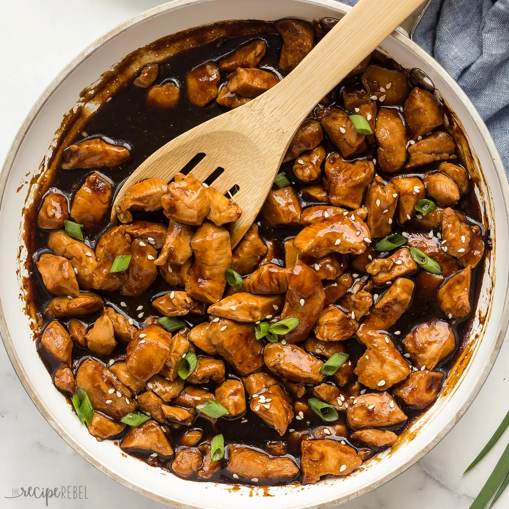

Teriyaki Chicken is a classic dish we love to make. You take tender chicken, grill or pan-sear it until it's just right, then coat it in a homemade teriyaki sauce. The sauce is simple—soy sauce, a bit of sugar, and mirin for sweetness. It gives the chicken a nice, shiny glaze and deep flavor. Serve it with some rice and veggies, and you’ve got a perfect meal that’s both delicious and comforting.
Ah, teriyaki chicken is one of those dishes that brings comfort with every bite. It’s simple but packed with flavor. We start by choosing the best cuts of chicken—usually thighs, because they stay juicy and tender. Then, we sear it in a hot pan or on the grill to lock in the juices and give it a nice, golden-brown crust.
✐ Ingredients
- Mirin
- 1/2 cups of soy sauce
- Minced Garlic
- Salt
- Pepper
- Sugar
- Corn Starch
- Water
- Oregano
- Sesame Seeds
✐ Instructions
Prepare the ingredients: Gather all ingredients and measure them out.
If using ginger and garlic, grate the ginger and mince the garlic.
Mix the base: In a small saucepan, combine soy sauce, mirin, sugar,and sake (if using) .Add the grated ginger and minced garlic if you want extra flavor.
Cook the sauce ♨: Place the saucepan on medium heat.Stir occasionally to ensure the sugar dissolves evenly. Let it come to a gentle simmer.
Thicken the sauce (optional: If you prefer a thicker sauce, mix the cornstarch and water in a small bowl to create a slurry. Slowly pour the slurry into the sauce, stirring constantly to prevent lumps. Let the sauce simmer for 1-2 more minutes until it thickens.
Finish and cool ☃: Once the sauce has reached the desired consistency, remove it from the heat. Allow it to cool slightly before using.
Now, your homemade teriyaki sauce is ready to use as a glaze or marinade!

Get more recipes ヅ
Styled Webpage